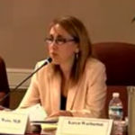
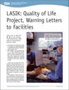
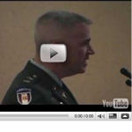

Лазеры, используемые для LASIK, PRK и других форм лазерной рефракционной хирургии, находятся в ведении FDA; однако критики LASIK уже давно обвиняют подразделение офтальмологических устройств FDA в том, что оно является не более чем регулирующий орган индустрии LASIK .
FDA полагалось на краткосрочный клинические испытания небольшая популяция пациентов проводимый финансово ангажированные глазные хирурги в своем одобрении LASIK. Долгосрочные побочные эффекты с тех пор стали известны результаты LASIK.
Бывший руководитель отдела офтальмологических устройств FDA Моррис Вакслер, доктор философии, говорит, что агентство уступило давлению со стороны офтальмологический медицинский картель и является призываем FDA отозвать одобрение LASIK .
Председатель консультативной группы FDA Джейн С. Вайс, доктор медицины, отвергает LASIK

Новое исследование FDA показало, что значительное число пациентов с LASIK испытывают инвалидизирующие симптомы - октябрь 2014 г.
Предварительные результаты долгожданного Исследование качества жизни LASIK Был опубликовано на веб-сайте FDA 19 октября 2014 года официальный представитель FDA Мальвина Эйдельман, доктор медицины, обобщила результаты исследования, сказав: "Учитывая большое количество пациентов, проходящих процедуру LASIK ежегодно, у значительного числа пациентов могут возникать симптомы неудовлетворенности и инвалидизации ."
• 45% пациентов, у которых до проведения LASIK не было никаких симптомов, сообщили о визуальных симптомах ( ореолы , взрывы звезд , яркий свет и призрак ) после операции LASIK.
"Визуальные симптомы были "очень" или "чрезвычайно" беспокоящими примерно у 4% испытуемых.
• До 1% испытуемых испытывали большие трудности с выполнением обычных действий или были не в состоянии выполнять их из-за визуальных симптомов.
• До 30% пациентов, у которых до LASIK не было симптомов сухости глаз, после LASIK развились симптомы сухости глаз.
• До 4% испытуемых были недовольны своим зрением.
Источник: Презентация слайдов FDA . Читайте больше на Лазерная лента новостей и Исследование Фдаласика . Важное сообщение для участников исследования PROWL .
Группа компаний заявляет, что FDA должно прекратить продажу устройств, в том числе "all-laser", "bladefree" LASIK - LA Times, 29.07.2011
Из статьи: Управление по контролю за продуктами и лекарствами должно прекратить разрешать продажу тысяч медицинских устройств и их использование пациентами без доказательств безопасности или эффективности Об этом сообщила Национальная академия наук в пятницу... В своем отчете, опубликованном в пятницу, Институт медицины, подразделение Национальной академии наук, рекомендовал отменить эту систему и ввести новые процедуры.
Статья по теме: Группа компаний просит отозвать полностью лазерные устройства LASIK - 15.10.2009
19.10.2010: FDA представило обновленную информацию об исследовании LASIK
Управление обеспечивает обновление на LASIK качества сотрудничестве статус проекта жизни. Прочитать пресс-релиз
Наблюдатель FDA Джим Дикинсон (Jim Dickinson) комментирует это обновление: FDA сообщило подробности "секретного" исследования LASIK от 19.10.2010
LasikNewsWire публикует редакционную статью о мнении: Растущее разочарование по поводу задержек и предвзятости в исследовании FDA по LASIK
Доказательства того, что LASIK делает здоровые глаза больными: влияние на общественное здравоохранение - 23.03.2011
Вебинар на тему ODwire.org с Моррисом Вакслером, доктором философии, главным научным сотрудником FDA, отвечающим за клинические испытания LASIK.
На этом вебинаре доктор Вакслер расскажет о влиянии LASIK на здоровье роговицы и оценит последние исследования в области безопасности процедуры. Доктор Вакслер также предложит рекомендации по LASIK для общественного здравоохранения.
Хирург LASIK Хелен Ву получила письмо с предупреждением от FDA - 2/12/10
Известный хирург LASIK Хелен Ву (Helen Wu) из глазного центра Новой Англии и медицинского центра Тафтса (Tufts Medical Center) не смогла "разработать, поддерживать и внедрять письменные процедуры MDR (отчетности о медицинском оборудовании) в соответствии с требованиями 21 CFR 803.17", согласно предупреждающему письму, выпущенному Управлением по контролю за продуктами и лекарствами после проверки бостонский центр LASIK. Критики LASIK уже давно обвиняют индустрию LASIK и хирургов LASIK в повсеместном сокрытии проблем, связанных с процедурой LASIK.
FDAWeb.com редактор критикует действия FDA по расследованию LASIK - 19.04.2010
FDAWeb.com редактор критикует регулирование FDA в отношении устройств LASIK и его связь с Американским обществом катарактальной и рефракционной хирургии (ASCRS), а также решение FDA сотрудничать с Министерством обороны (ВМС) в исследовании LASIK.
Бывший чиновник FDA выступил против одобрения FDA устройств LASIK - 15.04.2010
Моррис Вакслер, доктор философии, бывший глава подразделения FDA, ответственного за анализ данных о LASIK, пишет в LASIK patient advocate о неспособности FDA регулировать использование устройств LASIK.
Бывший Чиновник FDA говорит, что FDA "Облажалось" при одобрении LASIK - Сентябрь 2009
Из статьи: Когда в 1998 году Управление по санитарному надзору за качеством пищевых продуктов и медикаментов США впервые одобрило лазерные устройства для применения по показаниям LASIK, оно "облажалось", не установив стандарт для приемлемых побочных эффектов, о которых сообщалось в клинических исследованиях, рассказал бывший руководитель подразделения диагностических и хирургических устройств Моррис Вакслер в интервью FDA Webview в ходе телеконференции 9/3... "Я думаю, что мы облажались", - сказал Вакслер об утверждениях 1998 года. "Никто не собирается этого признавать. По сути, я думаю, что некоторые из этих суждений были ошибочными. Мы получали консультации от очень известных офтальмологов - более известных, чем кто-либо из наших сотрудников в агентстве.
В 2009 году в [FDA] CDRH вспыхивают беспорядки - автор: Джеймс Г. Дикинсон. DeviceLink.com Декабрь 2009
Из статьи: Недовольство пациентов неблагоприятными последствиями операции LASIK достигло критической точки в [FDA] CDRH в 2009 году. Жалобы включают постоянные проблемы с качеством жизни, такие как сухость глаз, нарушения ночного зрения, которые мешают вождению автомобиля., эмоциональная депрессия , и безработица. Пациенты также критиковали CDRH за сотрудничество с организацией офтальмологов в решении этих проблем. Мощная интернет-сеть пострадавших пациентов, прошедших процедуру LASIK, засыпала агентство критикой, петициями и жалобами, пока CDRH не прислала ответ. письмо в мае офтальмологам было сообщено о надлежащей рекламе и продвижении данной процедуры. Агентство признало, что реклама офтальмологами процедур LASIK не информировала потребителей о показаниях, ограничениях и рисках, связанных с процедурой.
Управление по санитарному Надзору за качеством пищевых продуктов и медикаментов (FDA): Постоянные визуальные симптомы после операции LASIK считаются "Серьезной травмой" В соответствии с Регламентом MDR
Визуальные симптомы после LASIK, такие как проблемы с ночным зрением , ореолы , и взрывы звезд индустрия LASIK скрыла их от внимания. Недавно FDA подчеркнуло, что визуальные симптомы могут быть серьезными, и напомнило индустрии LASIK, что федеральный закон требует сообщать о них в FDA.
"Примером серьезной травмы может служить пациент, у которого после процедуры LASIK наблюдаются стойкие визуальные симптомы, из-за которых офтальмолог обоснованно заключает, что пациент страдает от постоянного ухудшения зрения или необратимого повреждения глаз, вызванного использованием лазера во время процедуры LASIK".;

"Многие люди в США проходят процедуры LASIK", - говорит Шурен. "Закон требует, чтобы амбулаторные хирургические центры, проводящие LASIK, поддерживали надежную систему отчетности в соответствии с требованиями закона. Сообщение о нежелательных явлениях в FDA имеет решающее значение для того, чтобы помочь нам лучше понять безопасность и эффективность офтальмологических лазеров, используемых в процедурах LASIK, и это позволит нам принять соответствующие меры в тех случаях, когда лазеры не соответствуют требованиям безопасности и эффективности.” Ссылка на обновление для потребителей FDA
Управление по санитарному надзору за качеством пищевых продуктов и медикаментов объявляет о проекте LASIK "Качество жизни", Предупреждающие письма направлены в учреждения LASIK - FDA 15.10.2009
Из пресс-релиза: Цель проекта сотрудничества в области качества жизни LASIK - определить процент пациентов, у которых после операции LASIK возникают серьезные проблемы с качеством жизни, и выявить предикторы этих проблем... Управление по санитарному надзору за качеством пищевых продуктов и медикаментов также объявило, что оно выпустило предупреждающие письма в 17 амбулаторных хирургических центрах LASIK после проверок были выявлены неадекватные системы оповещения о нежелательных явлениях во всех центрах.
Письма с предупреждениями FDA направлены против сообщений о МЛУ в центрах LASIK - LasikNewsWire.com 15.10.2009
Перепечатано с разрешения fdaweb.com : Пострадавшая пациентка и активистка программы LASIK Пола Кофер скептически отнеслась к исследованию качества жизни, проведенному FDA совместно с Министерством обороны. В комментарии для FDA Webview она сказала: "На мой взгляд, Министерство обороны продемонстрировало предвзятость в пользу LASIK. Например, доктор Стивен Шаллхорн, который руководил крупнейшей программой рефракционной хирургии в Министерстве обороны до своей недавней отставки, является платным экспертом по защите от врачебной халатности, выступал с публичными заявлениями и публиковал литературу, отрицающую связь между плохим результатом LASIK и снижением качества жизни, и в настоящее время является медицинским директором одного из крупнейшие корпоративные поставщики услуг LASIK в мире.
LSW призывает исполняющего обязанности директора CDRH Джеффри Шурена отозвать одобрение устройств LASIK - LNW 14.09.2009
Из статьи: Часы для проведения операции LASIK говорит, что это противоречит большей части ответа FDA на публикацию FDA Webview в нашей публикации интервью с бывшим руководителем отдела офтальмологических диагностических и хирургических устройств FDA Моррисом Вакслером, который сказал, что FDA ошиблось, одобрив эксимерные лазеры для LASIK во время его пребывания в должности (см. статью). В письме от 9/13 исполняющему обязанности директора CDRH Джеффри Шурену и другим должностным лицам FDA и HHS, а также членам Конгресса, LASIK Surgery Watch сообщает, что FDA предупреждает, что его руководящие документы содержат только рекомендации, "никоим образом не освобождающие [его] от ответственности за одобрение эксимерных лазерных устройств для LASIK, процедуры с осложнениями, превышающими 20%.";
Глава Управления по санитарному надзору за качеством пищевых продуктов и медикаментов Дэниел Шульц уходит в отставку - The Wall Street Journal, 8/12/2009
Из статьи: Во вторник главный регулятор медицинского оборудования из Управления по контролю за продуктами и лекарствами заявил, что уходит в отставку. Этот уход вызван разногласиями внутри компании по поводу решений об одобрении устройств, которые, по мнению критиков регулятора, были слишком благоприятными для промышленности. Дэниел Шульц сказал, что его решение было принято "по взаимному согласию" с комиссаром FDA Маргарет Гамбург, которая вступила в должность в мае.
Петиция призывает к проверке клиник LASIK, санкциям для клиник, которые не сообщают об осложнениях - 25.05.2009
Из петиции: Заявитель просит Уполномоченного по контролю за продуктами питания и лекарствами проинспектировать клиники LASIK на предмет соблюдения требований к отчетности пользователей в соответствии с 21 CFR 803, подраздел С. Часть 803 требует, чтобы учреждения, использующие медицинские устройства, (1) устанавливали письменные процедуры по борьбе с МЛУ, (2) сообщали о нежелательных явлениях производителю или FDA и (3) представляли ежегодные отчеты в FDA. Кроме того, заявитель просит Уполномоченного по контролю за продуктами питания и лекарствами наложить санкции на клиники, не соблюдающие требования LASIK, в соответствии с положениями 21 USC331 - 337. Постановление предусматривает различные санкции - от предупреждающих писем до судебного запрета, гражданских и уголовных санкций.
Реклама LASIK должна предупреждать потребителей о рисках: FDA - Reuters 22.05.2009
Из статьи: Врачи, клиники и другие организации, продвигающие корректирующую глазную хирургию, известную как LASIK, должны убедиться, что их реклама информирует потребителей о возможных рисках, говорится в заявлении регулирующих органов США. письмо опубликовано в пятницу. Управление по контролю за продуктами и лекарствами, которое расследует жалобы пациентов на процедуру, сообщило поставщикам медицинских услуг, что рекламные ролики и другие рекламные акции, в которых нет необходимых предупреждений, побочных эффектов и других мер предосторожности, являются обманчивыми... Письмо пришло более чем через год после того, как FDA провело проверку. открытое заседание это привлекло десятки недовольных пациентов, которые жаловались на нечеткость зрения, двоение в глазах, депрессия и другие проблемы после процедуры LASIK или кератомилеза с помощью лазера in situ... Если FDA сочтет, что реклама LASIK вводит в заблуждение, оно может разослать предупреждающие письма, а также принять более жесткие меры, такие как наложение штрафов или направление на уголовное расследование.
Исполняющий обязанности комиссара FDA Джошуа Шарфштейн расследует жалобы пациентов, которым проводится процедура LASIK. - LasikNewswire 22.05.2009
Из статьи: исполняющий обязанности комиссара FDA Джошуа Шарфштейн (Joshua Sharfstein) сообщил FDA Webview 21.05.2011, что он изучает жалобы многих пациентов, перенесших операцию по улучшению зрения LASIK (лазерный кератомилез на месте), на то, что агентство не выполнило свои обязательства по расследованию их жалоб с 2006 года, поскольку эта методика сопряжена с неприемлемыми рисками... Они утверждают, что Управление по санитарному надзору за качеством пищевых продуктов и медикаментов заключило эффективный сговор с коммерческими хирургами LASIK-хирургии с целью сокрытия истинных показателей нежелательных явлений.
Устройства LASIK без лезвий одобрены FDA без проведения клинических испытаний. - LasikNewswire, 15.05.2009
Хотя [непрозрачный пузырьковый слой] лишь в редких случаях влияет на остроту зрения в течение трех месяцев после процедуры, это является частью растущего числа "новых осложнений", связанных с фемтосекундными лазерами, которые используются для безболезненного создания роговичных лоскутов перед изменением формы LASIK... Что касается вопросов, связанных с LASIK, Делэнси сказал, что агентство разрешило провести последующее интервью 5/14 для Consumer Reports с директором CDRH по офтальмологическому и ЛОР-оборудованию Мальвиной Б. Эйдельман.
Обновленная информация о "достижениях" Управления по санитарному надзору за качеством пищевых продуктов и медикаментов после слушаний по LASIK в апреле 2008 года - LasikNewswire.com 30.04.2009
Из статьи: "Доброе утро. Я Кваме Ульмер, руководитель отделения диагностических и хирургических устройств, и сегодня утром я расскажу вам о деятельности нашего отделения. 25 апреля 2008 года Управление по санитарному надзору за качеством пищевых продуктов и медикаментов (FDA) созвало Общественную консультативную группу из внешних экспертов, чтобы выслушать отзывы пациентов о LASIK и обсудить, как улучшить информирование пациентов и врачей о LASIK. В ответ на отзывы общественности и экспертов LASIK мы работаем над несколькими улучшениями в наших коммуникациях с общественностью по вопросам безопасности, связанным с LASIK..."
Управление по санитарному надзору за качеством пищевых продуктов и медикаментов плетет "запутанную паутину" на LASIK: DeviceLink.com автор: Джеймс Г. Дикинсон, ноябрь 2008
Центр, похоже, усилил свою цензуру и режим неразглашения информации об устройствах LASIK.
Из статьи:"...Похоже, что CDRH непреднамеренно плетет очень запутанную паутину, наблюдая за эффектами применения аппарата LASIK (лазерный кератомилез in situ)... Однако недовольство было настолько сильным, что в апреле 2008 года CDRH провела заседание комиссии по офтальмологическим приборам специально для того, чтобы рассказать об опыте пациентов, перенесших операцию LASIK. На этой встрече сеть центра начинает по-настоящему запутываться...";
Конгресс рассмотрит процесс утверждения FDA медицинского оборудования - 17 ноября 2008 г.
Законодатели задаются вопросом, сознательно ли FDA допускало небезопасные и неэффективные медицинские устройства на рынок США
Из нового выпуска: Представители Джон Д. Дингелл (D-MI), председатель Комитета по энергетике и торговле, и Барт Ступак (Bart Stupak), председатель подкомитета по надзору и расследованиям, сегодня начали расследование того, были ли руководители Центра устройств и радиологической безопасности Управления по санитарному надзору за качеством пищевых продуктов и медикаментов (FDA) (CDRH) сознательно искажал процесс научной экспертизы и одобрял или отклонял заявки на медицинское оборудование с грубым нарушением законов и нормативных актов, направленных на обеспечение безопасности и эффективности медицинских устройств. Такая деятельность может привести к попаданию на рынок США потенциально небезопасных и неэффективных медицинских устройств. Поводом для расследования послужило получение Письмо от 14 октября 2008 года написано от имени большой группы ученых и врачей CDRH, которые утверждают, что руководители CDRH "коррумпировали и вмешивались в научный обзор медицинских устройств"... В письмо отправлено сегодня уполномоченному FDA Эндрю К. фон Эшенбах, Дингелл и Ступак попросили проинформировать их о том, какие действия Комиссар предпринял на сегодняшний день и как он намерен решить все вопросы, поднятые учеными и врачами CDRH."
Ссылки по теме:
"Нью-Йорк Таймс" от 17.11.2008: Ученые FDA обвиняют чиновников Агентства в неправомерном поведении
7 января 2009 года Письмо Джону Подесте , Президентская переходная команда
The Wall Street Journal, 1/8/2009 Ученые FDA просят Обаму реструктурировать Агентство по борьбе с наркотиками
"Нью-Йорк Таймс" от 27.01.2009: Диссиденты в Фбр жалуются на расследование
2 апреля 2009 года Письмо Бараку Обаме
21 апреля 2009 - "Нью-Йорк Таймс"; Редкая встреча ФБР для обсуждения жалоб на одобрение устройств Из статьи: "В обширном меморандуме, направленном доктору Шарфштейну на прошлой неделе, ученые-диссиденты заявили, что "процесс проверки медицинских устройств со стороны регулирующих органов был серьезно искажен" и что те, кто высказывал опасения по поводу небезопасных устройств, подвергались ответным мерам со стороны руководителей агентства".;
30 января 2012 г. - The Washington Post; В иске утверждается, что FDA отслеживало личную электронную почту сотрудников, сообщавших о нарушениях Из статьи: Нынешние и бывшие сотрудники Управления по контролю за продуктами и лекарствами заявляют в судебном процессе, что агентство тайно отслеживало их личную электронную почту после того, как они высказали опасения, что одобренные медицинские устройства могут угрожать общественной безопасности... В иске говорится, что истцы были среди тех, кто осенью 2008 года жаловался членам Комитета Палаты представителей по энергетике и торговле на то, что старшие менеджеры Центра приборов и радиологического здоровья "приказывали, запугивали и принуждали экспертов FDA изменить свои научные обзоры, заключения и рекомендации в нарушение закона".&Затем, в январе 2009 года, после избрания Барака Обамы, но до того, как он был приведен к присяге, девять сотрудников FDA направили письмо переходной команде Обамы с жалобами на коррупцию в процессе проверки устройств FDA, которая, по их словам, ставила под угрозу общественное здравоохранение.
FDA запрашивает комментарии общественности по поводу LASIK
Управление по санитарному надзору за качеством пищевых продуктов и медикаментов (FDA) пересматривает безопасность LASIK и объявило о начале нового исследования качества жизни после LASIK в 2009 году. В сентябре 2008 года Управление по санитарному надзору за качеством пищевых продуктов и медикаментов открыло публичный доступ для получения комментариев о LASIK. Расскажите FDA о своем неудачном опыте применения LASIK.
Прочитайте комментарий, предоставленный Национальным исследовательским центром по проблемам женщин и семьи: Письмо
Гражданская петиция о запрете LASIK подана в FDA - 19.05.2008
В мае 2008 года в Управление по санитарному надзору за качеством пищевых продуктов и медикаментов (FDA) была подана гражданская петиция о запрете LASIK из-за существенного обмана в маркировке и необоснованного и существенного риска получения травм. В ходе клинических испытаний FDA препарата LASIK, включая новейшую технологию LASIK, примерно У 20% пациентов возникают осложнения которые сохраняются в течение более чем шести месяцев после операции. Исходя из этих данных, лазеры не соответствовали требованиям безопасности FDA для получения одобрения. Похоже, что Управление по санитарному надзору за качеством пищевых продуктов и медикаментов проявило халатность при одобрении устройств LASIK, поставив интересы офтальмологической промышленности выше своих обязанностей по защите общественного здоровья.
Чтобы ознакомиться с петицией и соответствующими комментариями общественности, перейдите по ссылке Regulations.gov и найдите идентификатор папки FDA-2008-P-0319 , или попробуйте перейти по этой ссылке. Перейти к подаче петиции
В ответ на общественный резонанс по поводу широко распространенных проблем с LASIK, FDA назначило специальное слушание на 25.04.2008: заслушать показания пациента LASIK Мэтью Котосоволоса.
5/10/2008 - Мэтью Котсоволос направляет последующее письмо Дэниелу Шульцу, доктору медицинских наук, из FDA, в котором выражает обеспокоенность по поводу плана Агентства сотрудничать с предвзятыми хирургами LASIK для проведения перспективного исследования качества жизни после LASIK: Прочитанное письмо
Пациенты Lasik описывают осложнения на слушаниях FDA - Washington Post от 25.04.2008
Из статьи: Пациенты и члены их семей, перенесшие лазерную операцию для улучшения зрения, рассказали о том, как они боролись с двоением в глазах, нечеткостью зрения и другими осложнениями на слушаниях, организованных Управлением по контролю за продуктами и лекарствами для оценки масштабов проблем, возникающих после процедуры..."Мы считаем, что большинство пациентов, проходящих процедуры, находятся в разумных пределах удовлетворенный и у них все хорошо", - заявил вчера журналистам во время телефонного брифинга директор Центра устройств и радиологической безопасности FDA Дэниел Г. Шульц. "Но очевидно, что есть группа, которая не удовлетворена и не получает ожидаемых результатов. Что мы на самом деле пытаемся сделать, так это выяснить, что это за число".
Давал ли армейский хирург Скотт Барнс ложные показания на слушаниях FDA по LASIK в апреле 2008 года?

"За последние 2 года армейские хирурги в Форт-Брэгге, Северная Каролина, перешли на 100%-ную поверхностную абляцию; пять известных травматических смещений лоскута (из 2500 процедур), вызванных "типичными" действиями солдат, способствовали этому изменению, но не в такой степени, как анализ визуальных результатов. Обзор 28 000 процедур показал, что солдаты с PRK или LASEK имеют на 20% больше шансов достичь некорригированной остроты зрения 20/15 или выше, чем солдаты с аналогичным уровнем аномалии рефракции, проходящие LASIK.";
Отчет критикует надзор ФБР за клиническими испытаниями - New York Times от 28.09.2007
Из статьи:"Управление по контролю за продуктами и лекарствами делает очень мало для обеспечения безопасности миллионов людей, которые участвуют в клинических испытаниях, - выяснил федеральный исследователь... Во многих отношениях крысы и мыши как объекты исследований в Соединенных Штатах получают большую защиту, чем люди".; сказал Артур Л. Каплан, заведующий кафедрой медицинской этики Пенсильванского университета. "
Врач сообщает о плохих результатах LASIK в FDA, утверждая, что медицина превратилась в крупный бизнес
"Мне сделали операцию lasik, и мне обещали, что зрение будет 20/20, и мне не понадобятся очки. Два года спустя я все еще испытываю сухость в глазах, необходимость почти постоянно носить очки для съемки крупным планом на 10 футов и нечеткое ночное зрение. Я врач и ждал операции и позволил себе сделать это только потому, что мне объяснили, что все нюансы процедуры были устранены... К сожалению, медицина в этой стране стала крупным, может быть, даже крупнейшей в мире, бизнесом, и врачи, медицинская промышленность, больницы не находятся под каким-либо реальным контролем самоуправления, правительства или FDA за этическим и моральным качеством, в моей области ортопедии проводятся миллионы ненужных МРТ, рентгеновских снимков, процедур, хирургических вмешательств и маркировки ПТС. те, кто еще больнее, продвигаются медицинским конгломератом и pts..."; Еще больше »
Ознакомьтесь с отчетами о травмах LASIK, поданными в FDA
Поищите в базе данных FDA сообщения о серьезных осложнениях, связанных с использованием лазеров и микрокератомов для рефракционной хирургии.
Тип Внешние ЗОНЫ для лазеров или ННО для микрокератомов в поле код продукта. Для интралазного (Intra-LASIK, безлопастного LASIK, полностью лазерного LASIK) типа "ИнтраЛаза" в поле Название бренда. Введите диапазон дат, чтобы настроить поиск.
Образцы отчетов о травмах, полученных с помощью LASIK, представленных в FDA:
"Я пытался обратиться за помощью в Lasik Plus, но все, что они могли мне сказать, это "нам очень жаль"... Если бы не мои прочные отношения с Иисусом Христом и многими братьями и сестрами-христианами, которые ежедневно молились за меня, это, скорее всего, лишило бы меня жизни".; Прочитать отчет
"На данный момент с помощью очков моя острота зрения может быть скорректирована до 20/20, но мое зрение при слабом освещении ужасное. Через семь месяцев у меня также наблюдается сильная сухость глаз, которая вызывает постоянное жжение и дискомфорт."; Прочитать отчет
"Я чувствую, что моя жизнь разрушена. И мысль о том, что мне придется прожить остаток жизни с этой болью, ужасна".; Прочитать отчет
"У меня не было ни одного счастливого момента с тех пор, как у меня начались осложнения. Я в тяжелой депрессии."; Прочитать отчет
"Это повлияло на мою работу, мои увлечения и, самое главное, на мои повседневные обязанности."; Прочитать отчет
"Это ухудшило мое зрение и вызвало у меня постоянную боль в глазах и сухость. Теперь я вижу сильные ореолы, призраки, множественные изображения, полосы, вспышки звезд, и мое зрение ужасно ухудшается".; Прочитать отчет
"Процедура была неудачной с самого первого дня... Я изучил множество мнений, и мне поставили диагноз: эктазия по методу lasik, кератоконус, краевая дегенерация прозрачной оболочки, пмд, и "мы не знаем, почему это не сработало..."; Прочитать отчет
"После операции у меня появились зрительные искажения, такие как ореолы, звездообразование, блики, трудности с четким зрением при большинстве условий освещения, за исключением дневного (естественного солнечного)... Я считаю, что первоначальное исследование FDA пострадало из-за "недостаточной отчетности"..." Прочитать отчет
Лиса охраняет курятник?
Управление по санитарному надзору за качеством пищевых продуктов и медикаментов (FDA) внедрило меры контроля для защиты от коррупции, связанной с особыми интересами или конфликтом интересов. Однако лица, которые, предположительно, обладают опытом проведения клинических испытаний и оценки новой технологии, заинтересованы в ее одобрении.
Управление по санитарному надзору за качеством пищевых продуктов и медикаментов (FDA) полагается на консультативные комитеты, которые предоставляют независимые рекомендации от внешних экспертов по новым медицинским устройствам, которые находятся на рассмотрении в FDA. Хотя комитет предоставляет рекомендации Агентству, окончательные решения принимаются FDA. Комитет, который рассматривает новые устройства для рефракционной хирургии, - это Комиссия по офтальмологическим устройствам. Некоторые члены комиссии - честные ученые, беспристрастно оценивающие потенциал новых устройств, которые могут принести пользу обществу или навредить ему. Другие члены комиссии, похоже, позволяют своим финансовым интересам в LASIK влиять на их суждения.
Заседания консультативного комитета открыты для общественности. Стенограммы заседаний консультативного комитета публикуются на веб-сайте FDA. Некоторые интересные обмены мнениями можно найти в предыдущих протоколах FDA - обмены мнениями, которые предвещали проблемы.
Ознакомьтесь с ключевыми выдержками из заседаний Комиссии FDA по офтальмологическим устройствам:
Слушания FDA по LASIK от 25 апреля 2008 г.: Больше видео и подробностей
Смотрите больше видеозаписей выступлений спикеров открытых публичных слушаний на слушаниях FDA: Ссылка
CBS News сообщает о слушаниях в FDA: Ссылка
Пациенты, перенесшие операцию LASIK, жалуются на комиссию: Сабина Воллмер, The News &Observer: Ссылка
Подробности заседания комиссии FDA по офтальмологическим приборам: Ссылка
Краткий протокол слушания FDA от 25 апреля 2008 года: Ссылка
Слайд-презентации со слушаний FDA: Ссылка
Стенограмма слушания FDA: Часть 1 , Часть 2 , Часть 3 , Часть 4
Другие ссылки, представляющие интерес для FDA
Чтобы ваш голос был услышан в FDA
CFR для подачи гражданской петиции
FDA 101: Как пользоваться системой подачи жалоб потребителями и MedWatch
Ваше руководство по сообщению о проблемах в FDA
Руководящий документ по удалению кератома , Новая ссылка
Расширение сферы применения для наведения лазеров , Новая ссылка
Руководство по применению лазеров для рефракционной хирургии , Новая ссылка
Прошедшие заседания Консультативного комитета FDA
Прошедшее заседание экспертного совета по офтальмологическим приборам
Материалы прошедшего совещания для секции офтальмологических устройств
Прошлые и будущие заседания консультативной группы по CDRH
Найдите устройство, одобренное FDA
Письмо с предупреждением доктору Чарльзу Кейсбиру
Встреча с микрокератомом, часть 1 , часть 2 , часть 3
Ссылки на заседания группы экспертов по офтальмологическим устройствам, состоявшиеся 22-23 июля 1999 года:
http://www.fda.gov/ohrms/dockets/AC/cdrh99t.htm
http://www.fda.gov/ohrms/dockets/AC/99/transcpt/3528t1.rtf
http://www.fda.gov/ohrms/dockets/AC/99/transcpt/3528t2.rtf